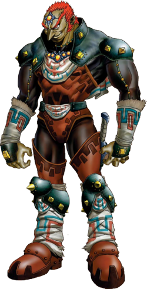
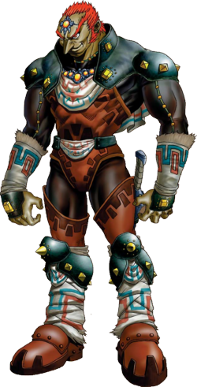

Ruolo: Protagonista, eroe scelto da destinare a salvare Hyrule o altri mondi.
Caratteristiche: Spesso rappresentato con capelli biondi o castani, abiti verdi, cappello a punta, e orecchie
appuntite. E' coraggioso, leale e silenzioso; E' mancino e di solito non parla, lasciando spazio al giocatore
per
immedesimarsi.
Abilita': Maestria con la spada e lo scudo, uso di armi e strumenti magici come arco, boomerang e bombe. Nei
giochi piu' recenti, Link puo' anche cavalcare, nuotare e usare poteri speciali legati a reliquie o oggetti
leggendari.
Ruolo: Sovrana di Hyrule e spesso custode della Triforza della Saggezza.
Caratteristiche: Forte, saggia e spesso capace di usare la magia. In molti giochi ha un ruolo “passivo”
all’inizio (viene rapita), ma in altri, come Twilight Princess o Skyward Sword, e' molto piu' attiva e
combattiva.
Varianti: Alcune incarnazioni di Zelda assumono alter ego come Sheik (Ocarina of Time) o Tetra (The Wind Waker),
aggiungendo profondita' e diversita' al personaggio.


Ruolo: Antagonista principale in gran parte dei giochi, spesso desidera conquistare Hyrule e ottenere la Triforza
del Potere.
Caratteristiche: Puo' apparire come potente mago umano (Ganondorf) o come mostro bestiale (Ganon). E'
intelligente, crudele e spietato, ma motivato da ambizione e sete di potere piu' che da pura malvagita'.
Obiettivo: Dominare Hyrule e soggiogare la Triforza.
 

Buoni:
Impa, Epona, Midna, Fi, Darunia, Nabooru, Ruto, Malon, Saria, Deku
Tree, Skull Kid, Tatl e Tael, Beedle
Cattivi:
Ganon, Dark Link, Vaati, Ghirahim, Yuga, Zant, Twinrova, Agahnim